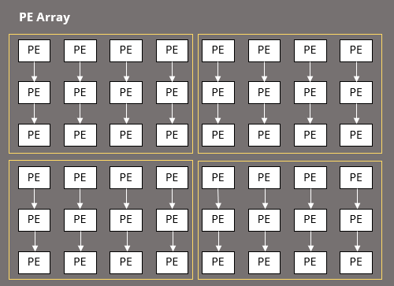

Lab 2 - Performance Modeling
Overview
In this lab, we will perform workload analysis based on the model architecture from Lab 1, develop an analytical model to predict system performance, and investigate the optimal software and hardware configuration.
Lab 2.1 - Workload Analysis and Network Parsing
When implementing an AI accelerator, Workload Analysis and Network Parsing are critical steps, as they help designers understand the requirements of deep learning models and design efficient hardware architectures accordingly.
In this lab, students are required to implement Network Parsing for PyTorch and ONNX models, transforming them into a format predefined by TAs for further analysis.
Workload Analysis to Identify the Performance Bottleneck
The purpose of workload analysis is to understand the computational requirements and characteristics of the target application, in order to guide architecture design. The main task of this phase is to analyze the workload that the accelerator needs to execute, ensuring that the designed architecture aligns with the characteristics of the target application, and avoids designing hardware that is either unsuitable or over-engineered.
In this phase, we will...
- Decide which computational patterns the AI accelerator should focus on, such as Conv acceleration or GEMM acceleration.
- Determine the architecture design, such as using systolic arrays or vector extensions, etc.
- Evaluating the memory architecture requirements, such as whether SRAM cache is needed or if there are constraints related to DRAM access.
Ratio of Different Operations
Next, we take VGG-8 (5 layers of 3x3 Conv2d + 3 layers of Linear) as an example, and we perform profiling on the model's inference with PyTorch Profiler. Based on the CPU time, we list the top ten computations and obtain the following results:
--------------------------------- ------------ ------------ ------------ ------------ ------------ ------------
Name Self CPU % Self CPU CPU total % CPU total CPU time avg # of Calls
--------------------------------- ------------ ------------ ------------ ------------ ------------ ------------
model_inference 12.90% 763.821us 100.00% 5.920ms 5.920ms 1
aten::conv2d 0.39% 22.854us 67.44% 3.993ms 798.517us 5
aten::convolution 0.89% 52.872us 67.05% 3.970ms 793.947us 5
aten::_convolution 0.77% 45.697us 66.16% 3.917ms 783.372us 5
aten::thnn_conv2d 0.14% 8.547us 38.52% 2.281ms 570.170us 4
aten::_slow_conv2d_forward 34.62% 2.049ms 38.38% 2.272ms 568.034us 4
aten::mkldnn_convolution 26.46% 1.566ms 26.69% 1.580ms 1.580ms 1
aten::batch_norm 0.19% 11.092us 6.30% 373.078us 74.616us 5
aten::_batch_norm_impl_index 0.31% 18.232us 6.11% 361.986us 72.397us 5
aten::native_batch_norm 5.10% 301.772us 5.74% 339.836us 67.967us 5
--------------------------------- ------------ ------------ ------------ ------------ ------------ ------------
Self CPU time total: 5.920ms
--------------------------------- ------------ ------------ ------------ ------------ ------------ ------------
Name Self CPU % Self CPU CPU total % CPU total CPU time avg # of Calls
--------------------------------- ------------ ------------ ------------ ------------ ------------ ------------
model_inference 30.99% 864.312us 100.00% 2.789ms 2.789ms 1
quantized::conv2d_relu 44.15% 1.231ms 46.34% 1.292ms 258.446us 5
quantized::linear_relu 10.34% 288.334us 10.90% 303.885us 151.943us 2
aten::max_pool2d 0.23% 6.332us 4.05% 112.968us 37.656us 3
aten::quantized_max_pool2d 3.57% 99.674us 3.82% 106.636us 35.545us 3
quantized::linear 3.43% 95.745us 3.61% 100.594us 100.594us 1
aten::quantize_per_tensor 2.06% 57.541us 2.06% 57.541us 57.541us 1
aten::_empty_affine_quantized 1.48% 41.339us 1.48% 41.339us 3.180us 13
aten::clone 1.12% 31.332us 1.34% 37.233us 18.617us 2
aten::flatten 0.47% 13.105us 1.29% 35.889us 35.889us 1
--------------------------------- ------------ ------------ ------------ ------------ ------------ ------------
Self CPU time total: 2.789ms
It can be observed that in the full-precision model, Conv2d accounts for more than 60% of the computation time, while in the quantized model, Conv2d still takes up over 40% of the CPU time. BatchNorm, Linear, and MaxPool consume relatively smaller portions of the time and are not the main computation bottlenecks. Based on this, we determined that the system design should focus on accelerating the convolutional layer (including Conv2d, BatchNorm, ReLU, and MaxPool) as the primary target.
Tip
If you have designed your own model architecture in Lab 1, you can also try running the above analysis and see what results you get.
Common accelerators used for Conv2d have the following architectures:
- Systolic array (e.g. Google TPU)
- Eyeriss
- NVDLA
In the following Labs, we will design the accelerator based on the Eyeriss architecture. Below is the system architecture diagram from the original Eyeriss paper.
Since the implementation of the Lab is for educational purposes, we will not be implementing the entire Eyeriss accelerator but will simplify it in line with the same principles. Overall, we will have a row-stationary dataflow PE array to perform Conv2d and ReLU computations. The parameters for BatchNorm can be pre-fused into the Conv2d weights and biases (the derivation process can be referenced in the Lab 1 lecture notes), so there will be no dedicated hardware support for BatchNorm. Finally, MaxPool is a memory-bound operation. By further integrating its dataflow with the Conv2d dataflow, we can reduce DRAM access and speed up the overall computation process. Therefore, we will design a module responsible for performing the MaxPool operation before the activation is written back to DRAM.
In this assignment, you have to analyze your own model, and answer the questions in report.
Network Parsing to Automate the Analysis Workflow
Since the hardware is designed by us and there are no existing performance evaluation tools to assist in the early stages of architecture design, we need to build our own performance model. This model will take a description of a model's computation as input and output the performance metrics that we care about.
To better integrate with the design of the model algorithm and automate the process, while bridging the differences between various model formats, we will develop a network parser. This parser will extract the parameters needed for performance evaluation from different model weight formats (such as PyTorch and ONNX). This will facilitate performance analysis in the subsequent stages, allowing the decoupling of performance modeling and AI model design.
Defining Layer Information Class
First, we need to define the parameters required for the operators supported by the accelerator.
In the layer_info.py, we provide a common interface through the ShapeParam to handle different shape-related parameters.
class ShapeParam(ABC):
def to_dict(self) -> dict:
"""Convert the object's attributes to a dictionary."""
return asdict(self)
@classmethod
def from_dict(cls, data: dict):
"""Create an instance of the class from a dictionary."""
return cls(**data)
ShapeParam is an abstract base class (ABC), which serves as the foundation for all shape parameter types. It provides two methods:
* to_dict(self): Converts the object's attributes into a dictionary. It uses dataclasses.asdict() to automatically convert all the fields of the dataclass into a dictionary format.
* from_dict(cls, data: dict): A class method that takes a dictionary and creates an instance of the class by unpacking the dictionary into the class constructor (cls(**data)).
According to the original paper, the parameters for Conv2d are as follows:
@dataclass(frozen=True)
class Conv2DShapeParam(ShapeParam):
"""Follow the notation in the Eyeriss paper"""
N: int # batch size
H: int # input height
W: int # input width
R: int # filter height
S: int # filter width
E: int # output height
F: int # output width
C: int # input channels
M: int # output channels
U: int = 1 # stride
P: int = 1 # padding
Besides inherited from ShapeParam, Conv2DShapeParam is also a frozen dataclass. The @dataclass(frozen=True) decorator automatically generates methods like __init__, __repr__, and __eq__, and the frozen=True option makes the dataclass immutable, meaning its attributes cannot be modified after initialization.
BatchNorm and ReLU can be directly fused into Conv2d, so there is no need to define them separately. MaxPool2d cannot be fused with Conv2d as an operator, but it needs to be integrated into the dataflow of our custom DLA. Therefore, we define the information for MaxPool2d as follows:
@dataclass(frozen=True)
class MaxPool2DShapeParam(ShapeParam):
N: int # batch size
kernel_size: int
stride: int
Additionally, we define LinearShapeParam as a dataclass that represents the shape parameters for a fully connected (linear) layer. However, our Eyeriss DLA will not directly support Linear layers. Instead, we will demonstrate CPU fallback support for operators that are not natively supported by our custom hardware through compiler in lab5.
@dataclass(frozen=True)
class LinearShapeParam(ShapeParam):
N: int # batch size
in_features: int
out_features: int
Next, we will implement the network parser to extract the above information from the pre-trained model's weight files.
Parsing PyTorch Models
To obtain the model's weight information, we can directly load the model and retrieve the weights. However, the activations are not stored in the PyTorch weight files, as they do not save the input and output activation sizes. These sizes can only be dynamically inferred during the model's computation process. Fortunately, PyTorch provides a built-in "hook" mechanism, which allows users to dynamically insert custom operations during the forward pass or backward pass. This enables us to capture and track the activation sizes during the computation.
With hooks, we can dynamically inspect or manipulate input and output tensors without modifying the model's structure. They are commonly used for model debugging and visualization.
There are several types of hooks in PyTorch:
1. Forward Hook
* Used to obtain the inputs and outputs of each layer during the forward pass.
* Triggered after the forward pass of a layer is completed.
2. Backward Hook
* Used to obtain the gradient values of inputs and outputs for each layer during the backward pass.
* Triggered after the backward pass of a layer is completed.
3. Gradient Hook
* Used to obtain the gradient values of each tensor during the backward pass.
* Triggered after each gradient computation is completed but before the gradient is updated to the grad attribute.
Here’s how we can use hook mechanism in PyTorch to capture activation sizes during the forward pass:
Step 1. Instantiate a Model
First, we create a SimpleModel and instantiate it.
import torch
import torch.nn as nn
class SimpleModel(nn.Module):
def __init__(self):
super(SimpleModel, self).__init__()
self.conv = nn.Conv2d(3, 16, kernel_size=3)
self.relu = nn.ReLU()
self.fc = nn.Linear(16 * 30 * 30, 10)
def forward(self, x):
x = self.conv(x)
x = self.relu(x)
x = x.view(x.size(0), -1)
x = self.fc(x)
return x
model = SimpleModel()
Step 2. Define Forward Hook
Next, we define the operation we want to insert, which must be defined as a function as the following prototype.
In this example, hook_fn prints the basic information of the layer, and it will be triggered during the forward pass.
def hook_fn(module: nn.Module, inputs: torch.Tensor, output: torch.Tensor) -> None:
print(f"Layer: {module.__class__.__name__}")
print(f"Input Shape: {inputs[0].shape}")
print(f"Output Shape: {output.shape}\n")
Step 3. Register Forward Hook
Then, we need to register the hook we defined with the register_forward_hook method into the modules we want to observe. Every call of register_forward_hook will return a handle of the hook inserted. We collect them with a list hooks, and we will remove them from the modules later.
# Register the hook using register_forward_hook
hooks = []
for module in model.modules():
hooks.append(module.register_forward_hook(hook_fn))
Step 4. Trigger Forward Pass
Finally, we create a random input and pass it through the model, triggering the hook. During the model's execution, the hook for each layer will be triggered, thus executing hook_fn. After the forward pass, we can remove the hooks via the handles collected in hooks.
# Create a input tensor
dummy_input = torch.randn(1, 3, 32, 32)
# Perform the forward pass, triggering the hook
model(dummy_input)
# Remove the hooks to prevent them from being triggered on every forward pass
for hook in hooks:
hook.remove()
The above code will output:
Layer: Conv2d
Input Shape: torch.Size([1, 3, 32, 32])
Output Shape: torch.Size([1, 16, 30, 30])
Layer: ReLU
Input Shape: torch.Size([1, 16, 30, 30])
Output Shape: torch.Size([1, 16, 30, 30])
Layer: Linear
Input Shape: torch.Size([1, 14400])
Output Shape: torch.Size([1, 10])
Layer: SimpleModel
Input Shape: torch.Size([1, 3, 32, 32])
Output Shape: torch.Size([1, 10])
In this assignment, please implement your own hook_fn to capture the information of each layer in your custom VGG model. Then, populate the information into the previously defined Conv2DShapeParam and MaxPool2DShapeParam accordingly.
Parsing ONNX Models
ONNX (Open Neural Network Exchange) is an open standard that allows models to be exchanged between different deep learning frameworks (such as PyTorch and TensorFlow) and run on various inference engines (such as ONNX Runtime and TensorRT).
Convert PyTorch Models to ONNX
import torch
import torch.onnx
model = SimpleModel()
dummy_input = torch.randn(1, 3, 32, 32)
torch.onnx.export(model, dummy_input, "simple_model.onnx")
Run Inference with ONNX Runtime
import onnxruntime as ort
session = ort.InferenceSession("simple_model.onnx")
result = session.run(None, {"input": input_data})
Visualize ONNX Models
An ONNX model can be visualized by using Netron, and the result looks like this:
- full-precision model (FP32)
- quantized model (INT8)
Students, try using Netron to visualize your own custom-designed model. Observe how the model architecture changes before and after quantization.
Parsing ONNX Models
ONNX cannot be used for training and requires the model to be trained in another framework first. Unlike PyTorch, ONNX stores the sizes of inputs and outputs.
During the process of parsing an ONNX model, using shape_inference helps us obtain tensor shape information.
Step 1. Use shape_inference to infer shapes
import onnx
from onnx import shape_inference
def _get_tensor_shape(model: onnx.ModelProto, tensor_name: str):
inferred_model = shape_inference.infer_shapes(model)
Step 2. Search in different Sections
# Search for the tensor with the given name
for value_info in inferred_model.graph.value_info:
if value_info.name == tensor_name:
return # return shape
# If not found; search the model's inputs
for input_info in inferred_model.graph.input:
if input_info.name == tensor_name:
return # return shape
# If still not found; search the model's outputs
for output_info in inferred_model.graph.output:
if output_info.name == tensor_name:
return # return shape
In this assignment, please implement a network parser for the ONNX model. Extract the relevant information from the model and fill it into the previously defined Layer Info classes.
Lab 2.2 - Analytical Model for Eyeriss DLA
Introduction to Performance Modeling
- Analytical modeling: Analytical modeling use mathematical equations to describe the performance characteristics of a hardware system. This method is suitable for simpler designs, but as system complexity increases, model accuracy may become limited.
- Simulation-based modeling: Simulation provides a more accurate modeling method with simulation software to model the behavior of the system, especially useful for evaluating complex architectures.
- cycle-accurate simulation v.s. behavioral simulation
- full-system simulation v.s. intruction-level simulation
- Statistical modeling: Statistical modeling gathers performance data under different conditions and uses statistical methods to create predictive models. When sufficient data is available, this method can achieve reasonable accuracy, but it may require extensive data and computational resources.
- Machine learning-based modeling: With advances in machine learning, using machine learning for performance modeling has become an emerging approach. For example, regression models or neural networks can predict the performance of specific hardware designs. This method is highly flexible and suitable for handling highly complex architectures but requires a large amount of training data.
In this section, we will develop an analytical model for Eyeriss architecture to predict the system performance, and investigate the optimal software and hardware mapping configuration.
Hardware Parameters
The ultimate goal of the analytical model is to determine which implementation method to adopt by calculating the performance that different hardware configurations can provide. In the DLA, factors such as the size of the PE array, the scratch pad memory size within the PE, the size of the global buffer, and the bus bandwidth all affect the final performance that the hardware can deliver. Below, we will define these parameters as the EyerissHardwareParam data class.
@dataclass(frozen=True)
class EyerissHardwareParam:
pe_array_h: int
pe_array_w: int
ifmap_spad_size: int
filter_spad_size: int
psum_spad_size: int
glb_size: int
bus_bw: int
noc_bw: int
Dataflow Mapping Parameters
Eyeriss uses the row-stationary (RS) dataflow, which is defined by the following mapping parameters (see Table 2 in the paper). These parameters determine how the data is tiled, how it is mapped to the computational units on the hardware, and which are related to data reuse.
@dataclass
class EyerissMappingParam:
m: int # number of ofmap channels stored in global buffer
n: int # number of ofmaps/ifmaps used in a processing pass
e: int # width of the PE set (strip-mined if nessary)
p: int # number of filters processed by a PE set
q: int # number of ifmap/filter channels processed by a PE set
r: int # number of PE sets for different ifmap/filter channels
t: int # number of PE sets for different filters
PE Set
Eyeriss employs a 2D array of PEs, each responsible for performing MAC operations. The PE array in Eyeriss is configurable. Thus, we can further partition the entire PE array into several PE sets to improve PE utilization rate and data reuse. A PE set is a logical grouping of PEs that are assigned to process a specific part of the convolution operation. since we apply the row-stationary dataflow, the height of a PE set is determined by the filter height R.
For instance, we have a 6*8 PE array:
We assume that the height of the filters is 3; then, we can separate the PE set like this:

There're plenty of methods to assign these PE sets. In this example, e for a PE set is 4, which means that one PE set can process 4 rows of ofmap at a time. The values of m, n, p, and q are constrained by the on-chip memory (GLB or Spad). Notice that r × t must equal 4 in this example. Either different PE sets process different channels, or different PE sets process different filters. There is no other choice.
Summary of Notation
Conv2D Shape Parameter
| Parameter | Description |
|---|---|
| N | batch size |
| H/W | input height/width |
| R/S | filter height/width |
| E/F | output height/width |
| C | input channels |
| M | output channels |
| U | stride |
| P | padding |
RS Dataflow Mapping Parameter
| Parameter | Description |
|---|---|
| m | number of ofmap channels stored in the global buffer |
| n | number of ofmaps/ifmaps used in a processing pass |
| e | width of the PE set (strip-mined if nessary) |
| p | number of filters processed by a PE set |
| q | number of ifmap/filter channels processed by a PE set |
| r | number of PE sets for different ifmap/filter channels |
| t | number of PE sets for different filters |
Tiling Strategy and Loop Ordering
Visualization for Conv2D Tiling
Below, we map a Conv2d operator to the Eyeriss DLA and label the Conv2d shape parameters and mapping parameters using the notation from the paper. We present the execution of Eyeriss tiling in each processing pass using a PPT to illustrate how data is processed in a single pass. The light blue-gray blocks represent the amount of data that can be processed in a single processing pass.
- Youtube Video
- Slides
Loop Nests Representation for Conv2D Tiling
Below is the representation of Conv2d tiling using loop nests, and how it is mapped to the PE array. We will explain each part step by step.
uint8 I[N][C][H][W] # input activations
int8 W[M][C][R][S] # filter weights
int32 B[M] # bias
uint8 O[N][M][E][F] # output activations
for m_base in range(0, M, m):
for e_base in range(0, E, e):
for n_base in range(0, N, n):
for c_base in range(0, C, q*r):
for m_tile in range(0, m, p*t):
# move data from DRAM to GLB
dma(DRAM_TO_GLB, I, size=n*(q*r)*(U*(e-1)+R)*W)
dma(DRAM_TO_GLB, W, size=(p*t)*(q*r)*R*S)
dma(DRAM_TO_GLB, B, size=(p*t))
# processing pass in the PE array, each PE calculate a row of output
# PE sets in the PE array
parallel_for c_subtile in range(0, q*r, q):
parallel_for m_subtile in range(0, p*t, p):
# PEs within a PE set
parallel_for r_idx in range(0, R):
parallel_for e_offset in range(0, e):
# in a single PE
for n_offset in range(0, n):
for c_offset in range(0, q):
for m_offset in range(0, p):
for f_idx in range(0, F):
n_idx = n_base + n_offset
m_idx = m_base + m_tile + m_subtile + m_offset
e_idx = e_base + e_offset
c_idx = c_base + c_subtile + c_offset
h_idx = e_idx
w_idx = f_idx
if c_base == 0:
psum = B[m_idx]
else:
psum += \
I[n_idx][c_idx][h_idx][w_idx:w_idx+S] * \
W[m_idx][c_idx][r_idx][0:S]
O[n_idx][m_idx][e_idx][f_idx] = psum
# move data from GLB to DRAM
dma(GLB_TO_DRAM, O, size=n*m*e*F)
The above pseudocode contains two types of for loops. The for loop represents a "temporal for," where the iterations correspond to the computation of different data at different time points by a single computational unit. The other loop, parallel_for, represents a "spatial for," where at the same time point, different data is assigned to different computational units for processing.
Different output rows (indexed by e_offset) will be distributed across different PEs for computation in a single processing pass, as represented below:
In a single processing pass, each PE is responsible for computing one row. It will first iterate F times along the input/output width dimension, then iterate p * t elements along the output channel dimension, followed by iterating q * r elements along the input/filter channel dimension. Finally, it will iterate over the input/output batch size dimension, where we are currently assuming \(N=n=1\).
Each PE is responsible for performing channel-wise partial sum accumulation. Therefore, when c_base == 0, the bias can be pre-loaded from the GLB (Global Buffer) into the PE. For other cases, the product of the input and weight elements is accumulated into the partial sum (psum) scratch pad memory.
Performance Metrics
After understanding how Eyeriss performs the Conv2d operation, the next step is to evaluate the system's performance under different parameter configurations. Below, we list several performance metrics:
- memory related
- compute related
- energy related
GLB Usage
The size required for the GLB (Global Buffer) depends on how much data is processed in a single processing pass, including the input feature map (8 bits per element), filter (8 bits per element), bias (32 bits per element), and partial sum (32 bits per element).
In the upcoming lab, zero skipping is expected to be used when fetching the ifmap, so there is no need to consider the storage of padding.
Below, we take the input feature map (ifmap) as an example:
DRAM Access (Data Transfer between DRAM and GLB)
The data used in a single processing pass is loaded from DRAM to the GLB once and written back from the GLB to DRAM once. Therefore, by dividing the total size of the entire layer by the amount of data processed in each processing pass, you can determine how many times DRAM needs to be accessed.
Below, we take the input feature map (ifmap) as an example:
GLB Access (Data Transfer between GLB and Spads)
Below, we take the input feature map (ifmap) as an example:
MACs
The number of MACs required by a Conv layer depends only on the shape of the layer.
Latency
Important
The unit of latency here is cycles, and the number of DRAM/GLB accesses are bytes. Thus, the DRAM/GLB access time of the following equation should be cycles/byte.
However, in the provided sample code, the units of DRAM_ACCESS_TIME and GLB_ACCESS_TIME are cycles/transaction, so they should be divided by bus_bw and noc_bw (unit: bytes/transcation), respectively.
The compute time of the PE array will partially overlap with the GLB access, but the exact ratio is difficult to estimate, so we will temporarily ignore it. As for the compute latency of the post-processing unit (PPU), it can be assumed to be:
Power and Energy Consumption
Given the following assumptions:
- Energy consumption per MAC: \(E_\text{MAC} = 2 \text{ μJ}\)
- Energy consumption per GLB access: \(E_\text{GLB} = 10 \text{ μJ}\)
- Energy consumption per DRAM access: \(E_\text{DRAM} = 200 \text{ μJ}\)
- Power consumption of leackage: \(P_\text{leakage} = 50 \text{ μW}\)
- clock rate: \(200 \text{ MHz}\)
We can get:
where \(A_\text{DRAM}\) is number of DRAM accesses, \(A_\text{GLB}\) is the number of GLB accesses, \(T\) is the latency per layer in seconds, and \(T_\text{cycles}\) is the latency per layer in cycles.
Therefore, the total energy and power consumption of a convolution layer are:
Summary
The above calculation method is only a rough estimate, helping us to have a quantitative basis before deciding on the system specifications. Although some factors have not been considered (e.g., memory read and write speeds may differ), it may not fully match the final hardware performance, but the trends it presents are still valuable for reference.
In this assignment, we will ask students to calculate the following performance metrics and implement them in the analytical model:
- global buffer usage per pass
- filter
- bias
- psum
- global buffer accesses per layer
- filter reads
- bias reads
- psum reads
- psum writes
- DRAM accesses per layer
- filter reads
- bias reads
- ofmap writes
Implementation of Analytical Model
In this lab, we use a Python class to implement the analytical model of the Eyeriss DLA. Please refer to the EyerissAnalyzer class defined in the lab2/src/analytical_model/eyeriss.py file provided by the teaching assistant. Below, we will explain the API design and usage of the analytical model.
Software/Hardware Configuration
class EyerissAnalyzer:
def __init__(self, name: Optional[str], hardware_param: EyerissHardwareParam) -> None:
pass
@conv_shape.setter
def conv_shape(self, conv_param: Conv2DShapeParam) -> None:
pass
@maxpool_shape.setter
def maxpool_shape(self, maxpool_param: Optional[MaxPool2DShapeParam]) -> None:
pass
@mapping.setter
def mapping(self, mapping_param: EyerissMappingParam) -> None:
pass
When initializing the EyerissAnalyzer, you need to specify the EyerissHardwareParam (see Hardware Parameters). Then, based on the results from network parsing, input the information for the Conv2d and MaxPool2d layers into the analytical model (see Defining Layer Information). Finally, set the desired mapping parameters for analysis (see Dataflow Mapping Parameters). The numbers below are just examples, and you can try different settings.
eyeriss = EyerissAnalyzer(
name="Eyeriss",
hardware_param=EyerissHardwareParam(
pe_array_h=6,
pe_array_w=8,
ifmap_spad_size=12,
filter_spad_size=48,
psum_spad_size=16,
glb_size=64 * 2**10,
bus_bw=4,
noc_bw=4,
),
)
eyeriss.conv_shape = Conv2DShapeParam(N=1, H=32, W=32, R=3, S=3, E=32, F=32, C=3, M=64, U=1)
eyeriss.maxpool_shape = MaxPool2DShapeParam(N=1, kernel_size=2, stride=2)
eyeriss.mapping = EyerissMappingParam(m=16, n=1, e=8, p=4, q=4, r=1, t=2)
Performance Estimation
In the previous Performance Metrics section, we mentioned several performance indicators that we care about. The analytical model is responsible for calculating these performance metrics based on the settings above. The EyerissAnalyzer provides the following APIs to perform this task:
@property
def glb_usage_per_pass(self) -> Dict[str, int]:
return {
"ifmap": 0,
"filter": 0,
"psum": 0,
"bias": 0,
"total": 0,
}
@property
def dram_access_per_layer(self) -> Dict[str, int]:
return {
"ifmap_read": 0,
"filter_read": 0,
"bias_read": 0,
"ofmap_write": 0,
"read": 0,
"write": 0,
"total": 0,
}
@property
def glb_access_per_layer(self) -> Dict[str, int]:
return {
"ifmap_read": 0,
"filter_read": 0,
"bias_read": 0,
"psum_read": 0,
"psum_write": 0,
"read": 0,
"write": 0,
"total": 0,
}
@property
def latency_per_layer(self) -> int:
return 0
@property
def macs_per_layer(self) -> int:
return 0
@property
def power_per_layer(self) -> float:
return 0
After initializing the analytical model, you can obtain the system's performance metrics under the given settings. Here is an example:
print(f'maximum GLB usage: {eyeriss.glb_usage_per_pass["total"]} bytes')
print(f'number of DRAM reads: {eyeriss.dram_access_per_layer["read"]} bytes')
print(f'number of DRAM write: {eyeriss.dram_access_per_layer["write"]} bytes')
print(f'number of GLB reads: {eyeriss.glb_access_per_layer["read"]} bytes')
print(f'number of GLB write: {eyeriss.glb_access_per_layer["write"]} bytes')
print(f'inference latency: {eyeriss.latency_per_layer} cycles')
The assignment will require students to implement getter functions for performance metrics based on the above API. Please refer to the code and the assignment instructions for further details.
Integration with Network Parser
Up to this point, the analytical model can evaluate performance based on the layer information and mapping parameters specified by the user, but it still requires manual input, which can be inconvenient. At this point, we can integrate the network parser we just implemented, directly load the pre-trained model, obtain the required information, and save it in a unified format.
The following code is the structure for integrating the network parser with the analytical model. In the for loop, the parsed layer information is fed into the analytical model for computation, and finally, the results are saved as a .csv file.
def main() -> None:
# Network parsing
model = load_model(...)
layers = parse_onnx(...)
# Hardware configuration
eyeriss = EyerissAnalyzer(...)
eyeriss.mapping = ...
# Workload mapping and performance estimation
for layer in range(len(layers)):
eyeriss.conv_shape = ...
eyeriss.maxpool_shape = ...
perf_report(eyeriss, output.csv)
if __name__ == '__main__':
main()
Lab 2.3 - Design Space Exploration (DSE)
After deciding on the target operators to accelerate and the hardware architecture, we need to perform design space exploration (DSE) to find the optimal parameter configuration. We will automate the process to list all possible configurations and select the best solution based on the optimization goals set by the user. In this lab, we will implement the EyerissMapper class and use exhaustive search to perform DSE.
Roofline Model
Fist of all, we will introduce the roofline model, which is an intuitive visual performance model used to provide performance estimates of a given workload running on a specific architecture, by showing inherent hardware limitations, and potential benefit and priority of optimizations.
In the subsequent sections, we are going to learn how to formulate:
- the charateristics of a given workload/application
- the performance provided by hardware under some limitations
Workload Characteristics
For a given workload, let \(W\) represent the total computational requirement and \(Q\) the data transfer requirement. The operational intensity (also called arithmetic intensity) \(I\) characterizes the workload as follows:
A workload with higher operational intensity relies more on computation, making it compute-bound. In such cases, optimizations should focus on accelerating computation, such as increasing the number of processing elements (PEs) to exploit parallelism. Conversely, a workload with lower operational intensity is memory-bound, and optimizations should aim to reduce memory traffic or increase the memory bandwidth.
For example, consider matrix-matrix multiplication \(C = AB\), where \(A \in \mathbb{R}^{m \times n}\), \(B \in \mathbb{R}^{n \times k}\), and \(C \in \mathbb{R}^{m \times k}\). The operational intensity is given by:
Similarly, for matrix-vector multiplication \(y = A x\), where \(A \in \mathbb{R}^{m \times n}\), \(x \in \mathbb{R}^{n \times 1}\), and \(y \in \mathbb{R}^{m \times 1}\), the operational intensity is:
With the asymptotic analysis, we observe that matrix-matrix multiplication is more compute-bound, whereas matrix-vector multiplication is more memory-bound as the problem size increases.
Hardware Limitations
For a given hardware architecture, the capacity of such a system is upper-bounded by two parameters, the peak performance of the processor and the peak bandwidth of the memory. The roofline is formulated as the following:
where \(P\) is the attainable performance, \(\pi\) is the peak performance, \(\beta\) is the peak bandwidth, and \(I\) is the operational intensity.
For the Eyeriss DLA in our lab, each PE complete a MAC in a cycle, so the peak performance \(\pi\) is bounded by the number of PEs \(N_\text{PE}\), that is:
where \(k\) is a constant used to make the unit consistent between the both sides of the inequality (e.g. \(\text{MACs}/\text{cycle}\) or \(\text{FLOPs}/\text{second}\)), which can be the number of MACs a PE can compute in a cycle or the number of arithmetic operations a PE can compute in a second.
With the above formulation, we can plot the performance bound as follows:
- y axis: performance \(P\) (unit: FLOPS or MACs/cycle)
- x axis: operational intensity \(I\) (unit: FLOPs/byte or MACs/byte)
- black solid line: performance upper bound of a given hardware
- red dashed line: machine balance point, separating the memory-bound (left) and compute-bound (right) regions
For a given hardware architecture, different mapping parameter choices leads to different number of memory accesses, and hence affect the operational intensity (OI). The following figure shows that Mapping 1 (OI = 8 < 12) is memory-bound, and Mapping 2 (OI = 18 > 12) is compute-bound.
Changes in hardware parameters alter the capacity, leading to different rooflines. For the same workload (fixed OI = 16), it is compute-bound on Hardware 1 with 48 PEs, while it is memory-bound on Hardware 2 with 72 PEs.
We provide a Python script roofline.py in the project root to plot the roofline model. It supports the following functionalities:
- Generate multiple rooflines based on given peak performance and peak memory bandwidth
- Plot multiple workload points by specifying their operations intensities
For example, you can define and plot a Roofline model by calling plot_roofline function:
peak_performance = 60.0
peak_bandwidth = 6.0
plot_roofline(
rooflines={"Custom Hardware": (peak_performance, peak_bandwidth)},
workloads={"New Mapping": 10.0},
filename="log/figure/custom.png",
)
[!Note] The above code was updated at 3/29 17:30
Then, you can execute this script with:
Mapping Parameter Search
Search Space Construction
First, we need to list all possible parameter configurations, as shown in the following code:
from itertools import product
def generate_mappings(self) -> List[EyerissMappingParam]:
n_avaliable_list = [1]
p_available_list = self.p_avaliable()
q_available_list = self.q_avaliable()
e_available_list = self.e_available()
r_available_list = self.r_available()
t_available_list = self.t_available()
m_available_list = self.m_available()
candidate_solutions = product(
m_available_list,
n_avaliable_list,
e_available_list,
p_available_list,
q_available_list,
r_available_list,
t_available_list,
)
return candidate_solutions
Each of *_available() functions will return a list of integers, representing the set of possible values for each mapping parameter. For a detailed explanation of the approach, please refer to the example code provided by the teaching assistant in analytical_model/mapper.py. Then, use itertools.product(...) to compute the Cartesian product, which will give you a list of tuples, where each tuple represents a set of mapping parameters.
Search Space Pruning by Constraints
To reduce the complexity of subsequent hardware implementation, we will set certain parameter combinations that the hardware cannot support and remove them from the search space.
def validate(self, mapping) -> bool:
m, n, e, p, q, r, t = mapping
# pq constraints
if p * q > self.hardware.filter_spad_size // self.conv_analyzer.conv_shape.S:
return False
# e constraints
if (
e % self.hardware.pe_array_w != 0
and e != self.hardware.pe_array_w // 2
and self.conv_analyzer.conv_shape.E != e
):
return False
# rt constraints
if (
r * t
!= self.hardware.pe_array_h
* self.hardware.pe_array_w
// self.conv_analyzer.conv_shape.R
// e
):
return False
# m constraints
if m % p != 0:
return False
return True
candidate_solutions = [sol for sol in candidate_solutions if validate(sol)]
Design Point Evaluation
The remaining parameter configurations are those that are still valid under our hardware constraints. Next, we can design our own scoring method, where a set of EyerissMappingParam is used as input, and it outputs a score that can be used for ranking. After scoring each EyerissMappingParam in the remaining candidate_solutions, we can sort them to find the best mapping parameters for the specified operator size and hardware configuration.
The entire exploration process will be implemented in the EyerissMapper.run() method, which constructs the search space with generate_mappings(), calculate the performance metrics with Eyeriss.Analyzer.summary(), and finally return the best N solutions with the scoring function EyerissMapper.evaluate() defined by youself. Here is the function code:
from heapq import nlargest, nsmallest
def run(
self,
conv2d: Conv2DShapeParam,
maxpool: MaxPool2DShapeParam | None = None,
num_solutions: int = 1,
) -> list[AnalysisResult]:
self.analyzer.conv_shape = conv2d
self.analyzer.maxpool_shape = maxpool
results: list[AnalysisResult] = []
for mapping in self.generate_mappings(): # construct the search space for mapping parameters
self.analyzer.mapping = mapping
res = self.analyzer.summary # project the configuration to performance metrics
results.append(res)
results = nlargest(num_solutions, results, key=self.evaluate) # evaluate each design point
return results
In the assignment, students will need to design and implement your own scoring algorithm in Eyeriss.evaluate() to evaluate how good/bad a design point (a set of mapping parameters) is and explain why you chose this design in your report.
def evaluate(metrics: AnalysisResult) -> int | float:
raise NotImplementedError
sorted_solutions = sorted(candidate_solutions, key=scoring_function, reverse=True)
# or
best_solution = max(candidate_solutions, key=scoring_function)
# or
results = nlargest(num_solutions, results, key=self.evaluate) # evaluate each design point
Hardware Parameter Search
Introduction
So far, we have been able to compute the optimal dataflow mapping parameters for each convolution layer under a given hardware configuration. Next, we want EyerissMapper to automatically find the optimal hardware configuration for us using the same evaluation criteria. We can achieve this by slightly modifying the EyerissMapper.run() function to consider different hardware configurations as well. The modified code is as follows:
def run(
self,
conv2d: Conv2DShapeParam,
maxpool: MaxPool2DShapeParam | None = None,
num_solutions: int = 1,
) -> list[AnalysisResult]:
self.analyzer.conv_shape = conv2d
self.analyzer.maxpool_shape = maxpool
results: list[AnalysisResult] = []
for hardware in self.generate_hardware(): # Construct the search space for hardware parameters
self.analyzer.hardware = hardware # Reconfigure the hardware parameters
for mapping in self.generate_mappings():
self.analyzer.mapping = mapping
res = self.analyzer.summary
results.append(res)
results = nlargest(num_solutions, results, key=self.evaluate)
return results
In this modified code, we added a loop to search for EyerissHardwareParam values and used EyerissMapper.generate_hardware() to construct the search space.
Design Space Construction for Hardware Specification
In the sample code provided by the TA, the EyerissMapper.generate_hardware() method has already been implemented. The method for generating the search space is similar to EyerissMapper.generate_mappings() from the previous section, but each hardware parameter currently has only one value. This means that the constructed search space candidate_solutions contains only a single element.
def generate_hardware(self) -> list[EyerissHardwareParam]:
# Add more values to the following lists to explore more solutions
pe_array_h_list = [6]
pe_array_w_list = [8]
ifmap_spad_size_list = [12]
filter_spad_size_list = [48]
psum_spad_size_list = [16]
glb_size_list = [64 * 2**10]
bus_bw_list = [4]
noc_bw_list = [4]
candidate_solutions = product(
pe_array_h_list,
pe_array_w_list,
ifmap_spad_size_list,
filter_spad_size_list,
psum_spad_size_list,
glb_size_list,
bus_bw_list,
noc_bw_list,
)
candidate_solutions = [EyerissHardwareParam(*m) for m in candidate_solutions]
return candidate_solutions
For the assignment, students are required to modify this function based on the Roofline model analysis (compute-bound or memory-bound). They should add more candidate solutions or introduce constraints, explain the reasoning behind these modifications in their report, and use actual data to demonstrate how the newly added hardware configurations address performance bottlenecks.
Practice
Prerequisites
- Download the sample code and report template from Moodle and then decompress it.
- Create and activate virtual environment for AOC labs.
- Install dependency packages
Important
Please ensure that your Conda environment uses a Python version greater than 3.10, as we rely on its new features (e.g., simplified type hints and match-case syntax) in this lab.
After unzipped the file, the directory structure will look like below:
$PROJECT_ROOT
├── analytical_model
│ ├── __init__.py
│ ├── eyeriss.py
│ └── mapper.py
├── layer_info.py
├── lib
│ ├── models
│ │ ├── __init__.py
│ │ ├── lenet.py
│ │ ├── mlp.py
│ │ ├── qconfig.py
│ │ └── vgg.py
│ └── utils
│ ├── dataset.py
│ ├── __init__.py
│ └── utils.py
├── main.py
├── network_parser
│ ├── __init__.py
│ ├── network_parser.py
│ └── torch2onnx.py
├── onnx_inference.py
├── profiling.py
├── report.md
├── requirements.txt
└── weights
├── vgg8-power2.pt
└── vgg8.pt
Note that the lib/models and lib/utils directories contains the code from lab1. If you have designed your own model architecture other than the VGG-8 provided by the TA and you want to perform lab2's analysis with your own model, please put it into lib/models.
1. Workload Analysis
Use the profiling.py script provided in the lab analyze the computational breakdown of each operator in the model you used for Lab 1. To check the usage of profiling.py, run:
For example, to profile a full-precision model, execute:
To profile a quantized model, remember to specify the quantization backend by the --backend or -b option.
Your report should include:
- Architecture of your model you used
- Profiling results for the full-precision model
- Profiling results for the quantized model
- Analysis and comparison
Either as screenshots or copied output text is acceptable.
2. Network Parser
In Lab 5, we will use an ONNX-format model as input for the AI compiler. In this lab, we will learn how to convert a model into a format that an analytical model can process. The definition of that format is defined with Python dataclass and previously-mentioned in Defining Layer Information Class. The provided example code includes a script for converting PyTorch models to ONNX, and the lecture notes explain how to parse PyTorch models.
Students are required to complete the following two functions defined in network_parser/network_parser.py and used to convert models into the format defined in layer_info.py:
- (10%)
parse_pytorch(model: nn.Module, input_shape: tuple[int]) -> list[ShapeParam] - (10%)
parse_onnx(model: onnx.ModelProto) -> list[ShapeParam]
You may create your own test program or function to verify the correctness of your implementation.
3. Analytical Model
Given a set of hardware and mapping parameters, we aim to estimate the performance achievable with this system configuration and the associated cost for each convolutional block (Conv2d+ReLU or Conv2d+ReLU+MaxPool2d).
The metrics to evaluate are listed below, and some of those have been demonstrated by TA in the handout and sample code:
- GLB usage per processing pass (unit: bytes): including ifmap, filter, bias, and psum
- GLB access (unit: bytes): including ifmap read, filter read, bias read, psum read, psum write, and ofmap write
- DRAM access (unit: bytes): including ifmap read, filter read, bias read, and ofmap write
- number of MACs
- latency of inference (unit: cycles)
- power consumption (unit: μW)
- energy consumption (unit: μJ)
To complete this assignment, students must:
- (15%) Compute the performance metrics using the notation from the Eyeriss paper and write down the equations in LaTeX format in your report.
- (15%) Implement the specified getter functions in the
EyerissAnalyzerclass inanalytical_model/eyeriss.py. Students must strictly follow the API specifications defined in the lecture notes and sample code, including input and output data types for each function. Grading will be based on the success rate of automated tests, including edge case evaluations.
Similarly, you can create your own test program or function to verify the correctness of your implementation.
4. Roofline Model
- (5%) Derive the operational intensity of the 2D convolution kernel using the notation from the Eyeriss paper in LaTeX. Then, estimate its complexity with Big-O notation.
-
(5%) Estimate the operational intensity of the following Conv2D kernel size, plot this kernel onto the roofline model of peak performance 48 MACs/cycle and peak bandwidth 4 byte/cycle, and determine which type of performance bound such kernel is in your report.
N M C H/W R/S E/F P (padding) U (stride) 1 64 3 32 3 32 1 1
5. Design Space Exploration
Consider an Eyeriss-based accelerator with the following configurations:
- 6×8 PE array
- 64 KiB global buffer
- 76 bytes of scratchpad memory per PE:
- 12 bytes for ifmap
- 48 bytes for filter
- 16 bytes for psum
- 4-byte bus and NoC bitwidth (transfers 4 bytes per cycle)
Complete the following 3 tasks:
- Search Space Construction for Dataflow Mappings (10%)
Implement the
generate_mappings()method inEyerissMapper(located inanalytical_model/mapper.py) to generate candidate mapping parameters using the provided*_available()methods. Filter out invalid configurations using thevalidate()method. - Evaluation Algorithm Design (10%) Develop an evaluation algorithm in the
evaluate()method ofEyerissMapperto assess the quality of a given mapping based on analytical model performance metrics.- Describe the design and logic of your algorithm in the report. (What performance metric(s) are considered, and why?)
- Integrate it with the analytical model and network parser for end-to-end analysis. (triggered by the
main.py, which will be described latter) - Include the generated CSV output file (
dse_mappings.csv) in your submission, containing the mapping parameters and corresponding performance metrics for the top 3 candidate solutions of each Conv2D layer. - List the best candidate solutions per layer selected by your algorithm in the report.
- Search Space Expansion for Hardware Configurations (10%)
Modify the
generate_hardware()method inEyerissMapperto expand the search space for hardware parameters based on Roofline model analysis (compute-bound vs. memory-bound).- Explain the rationale for your modifications in the report.
- Use actual data to demonstrate how your updated hardware configurations mitigate performance bottlenecks.
- Include the generated CSV output file (
dse_all.csv) in your submission, containing the hardware parameters, mapping parameter, and corresponding performance metrics for the top 3 candidate solutions of each Conv2D layer.
These tasks do not have a single correct solution—creativity is encouraged.
A main.py script is provided in the project root, integrating the network parser, analytical model, and design space exploration. To view usage options, run:
Basic case:
More complex scenario: